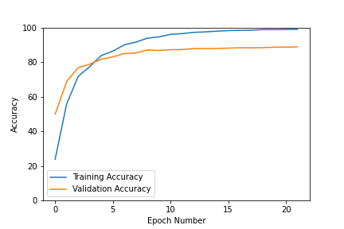
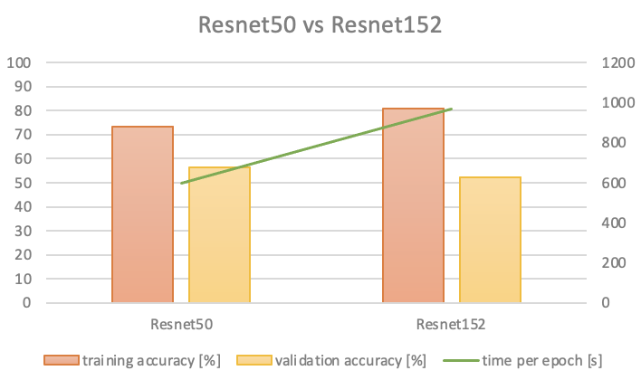
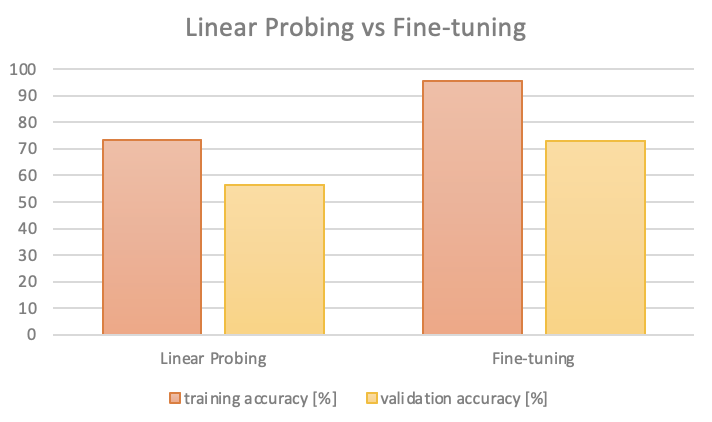
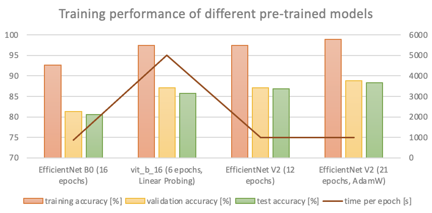

Mika Feng
The problem that I tackled is the “Birds Birds Birds - Are they real?” on Kaggle competition. I tried to achieve the highest accuracy attainable for this classification task.
Data from Kaggle, “Birds Birds Birds - Are they real?”
Google Colab Pro, GPU
The code of my final approach can be found here .
I partitioned the initial training dataset into two subsets, namely the "training dataset" and the "validation dataset". The training dataset comprises 80% of the original training data, while the validation dataset comprises the remaining 20%.
I performed fine-tuning on the EfficientNet V2 small model, and modified the model's classifier by adding a dropout layer with a dropout rate of 0.5. This helps to prevent overfitting and improve the model performance.
For training, I used cross entropy loss function, AdamW optimizer with initial learning rate 0.0005 and weight decay 0.002, and a step learning rate scheduler with step size = 2 and gamma = 0.7.
To augment the images during training, I utilized the RandomResizedCrop with scale=(0.70, 1.0) and RandomHorizontalFlip transformations.
Using the above setting, after training 21 epochs, the training accuracy was 98.91%, the validation accuracy was 88.8%, the test accuracy (on Kaggle) was 88.3%, and each epoch took about 1000s to train.
At the beginning of this experiment, I tried linear probing, which trains a linear classifier on top of a pre-trained neural network on both Resnet50 and Resnet152 pretrained weights.
For Resnet50, after training 10 epochs, the training accuracy was 73.2639%, the validation accuracy was 56.3595%, and each epoch took about 600s to train.
For Resnet152, after training 10 epochs, the training accuracy was 80.8123%, the validation accuracy was 52.1619%, and each epoch took about 970s to train.
The training accuracy increased but the validation accuracy didn't increase by increasing the layers of Resnet. Also, the time for training each epoch increased by about 370s. Therefore, the validation accuracy doesn't improve significantly enough with the use of linear probing on Resnet152.
For Resnet50, I tried not freezing the model parameters. The result after training 10 epochs was training accuracy 95.5957%, validation accuracy 72.9863%. Therefore, fine-tuning all parameters results in significantly better validation accuracy compared to linear probing.
I experimented with image augmentation and adjusted the dropout and weight decay parameters. From my findings, adjusting the dropout parameter had the greatest impact. However, the improvement in validation accuracy was minimal despite this.
To improve the validation accuracy, I attempted to apply a weight sampler to the training set data loader, since there might be an issue with dataset imbalance. However, this approach did not lead to significant improvements in the validation accuracy.
Next, I attempted to fine-tune the EfficientNet B0 model, which is more efficient in training, while also adjusting the dropout parameter in an effort to enhance the validation accuracy. After training 16 epochs, the training accuracy was 92.62%, the validation accuracy was 81.28%, the test accuracy (on Kaggle) was 80.6%, and each epoch took about 860s to train. Therefore, EfficientNet B0 performed better in accuracy and efficiency compared to Resnet50.
In order to achieve higher accuracy, I tried two other different models vit_b_16 and EfficientNet V2.
For vit_b_16, I used linear probing due to the high training cost. After training 6 epochs, the training accuracy was 97.40%, the validation accuracy was 87.15%, the test accuracy (on Kaggle) was 85.7%, and each epoch took more than 5000s to train.
For EfficientNet V2, I fine tuned the model based on the small pretrained weight. After training 12 epochs, the training accuracy was 97.46%, the validation accuracy was 87.09%, the test accuracy (on Kaggle) was 86.8%, and each epoch took about 1000s to train.
Since EfficientNet V2 performed better and took less time to train per epoch, I trained more epochs on it with AdamW optimizer. After training 21 epochs, the training accuracy was 98.91%, the validation accuracy was 88.8%, the test accuracy (on Kaggle) was 88.3%, and each epoch took about 1000s to train. The usage of AdamW instead of Adam can result in an enhancement in validation accuracy and a reduction in overfitting.
Based on my experiments, I discovered two key findings:
There are two major problems:
There are three things that I want to try:
There are three primary ways in which my approach differs from others: